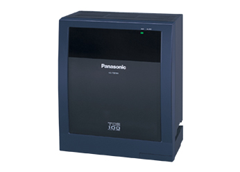

IP-АТС KX-TDE 100 представляет собой полноценное IP решение, использующее принцип коммутации
IP-пакетов. IP-АТС KX-TDE 100 обладают всеми функциями, интерфейсами и абонентскими терминалами АТС
KX-TDA. Основным отличием и преимуществом данной модели является новая процессорная плата. Она
объединяет в себе функционал пяти плат KX-TDA, таких как:
• Плата внешних IP-линий
• Плата внутренних IP-абонентов
• Голосовая почта (2 канала)
• Плата удаленного администрирования и CTI интеграции
• Карта расширения памяти для поддержки многосторонней конференции.
• Плата внутренних IP-абонентов
• Голосовая почта (2 канала)
• Плата удаленного администрирования и CTI интеграции
• Карта расширения памяти для поддержки многосторонней конференции.
Возможности:
• Поддержка всех без исключений функций
KX-TDA100
• Предельная ёмкость системы: до 128 внешних линий, до 128 внутренних линий, 128 мобильных абонентов
• До 32 внешних IP-линий (по протоколу SIP)
• До 96 внешних IP-линий (по протоколу H.323)
• До 64 системных IP-телефонов
• До 128 SIP-телефонов сторонних производителей
• Поддержка SIP-транков (по протоколам RFC3261, 3262, 3264, 3311, 4028)
• Встроенные базовые функции голосовой почты (2-канала)
• Большой объем внутренней памяти
• Единая система регистрации и учета вызовов АТС (SMDR) в сети
• Передача факсов по IP-сети (поддержка протокола T 38)
• Совместимость с новыми моделями системных IP-телефонов и консолями серии NT300
• Совместимость с новой 8-канальной базовой станцией DECT
• Возможность удаленного администрирования и обновления нескольких АТС в сети.
• Принципы программирования, сходные с KX-TDA
• Поддержка многосторонней конференции
• Полная совместимость с АТС серии KX-TDA
• Работа с пакетом CTI приложений Phone Assistant
• Предельная ёмкость системы: до 128 внешних линий, до 128 внутренних линий, 128 мобильных абонентов
• До 32 внешних IP-линий (по протоколу SIP)
• До 96 внешних IP-линий (по протоколу H.323)
• До 64 системных IP-телефонов
• До 128 SIP-телефонов сторонних производителей
• Поддержка SIP-транков (по протоколам RFC3261, 3262, 3264, 3311, 4028)
• Встроенные базовые функции голосовой почты (2-канала)
• Большой объем внутренней памяти
• Единая система регистрации и учета вызовов АТС (SMDR) в сети
• Передача факсов по IP-сети (поддержка протокола T 38)
• Совместимость с новыми моделями системных IP-телефонов и консолями серии NT300
• Совместимость с новой 8-канальной базовой станцией DECT
• Возможность удаленного администрирования и обновления нескольких АТС в сети.
• Принципы программирования, сходные с KX-TDA
• Поддержка многосторонней конференции
• Полная совместимость с АТС серии KX-TDA
• Работа с пакетом CTI приложений Phone Assistant
Пользователь KX-TDA может провести модернизацию своей АТС простой заменой процессорной платы,
получив, таким образом, систему KX-TDE.
При этом все прежние функции и модули сохраняются. Нет необходимости менять станцию целиком.
При этом все прежние функции и модули сохраняются. Нет необходимости менять станцию целиком.
Работа с разными каналами связи
Возможность подключения к различным типам городских линий (к аналоговым, цифровым и IP (SIP,
H.323)линиям)является одним из конкурентных преимуществ IP-АТС, в сравнении с «традиционными» АТС.
Данная функциональная особенность обеспечивает надежную телефонную связь по различным каналам
связи. Работа с различными каналами связи обеспечивает последующее расширение системы за счет
IP-телефонов и SIP- телефонов сторонних производителей (протестированных и рекомендованных
компанией Panasonic). Работа с SIP-телефонами доступна абонентам IP-АТС серии TDE.
Поддержка основных функций АТС
IP-АТС Panasonic поддерживает основные функции АТС, такие как перехват вызова, удержание
вызова, поддержка конференции, определение номера, повтор вызова, переадресации и д.р. IP-АТС
обладает гибкой системой автоматического распределения вызовов, которая позволяет существенно
экономить на связи. При использовании услуг нескольких провайдеров в зависимости от типа звонка
(местный, международный и т.д.), система направит звонок по пути наименьшей стоимости. Выбор
провайдера может изменяться автоматически в зависимости от дня недели или времени суток. IP-АТС
позволяет задавать приоритет звонкам от VIP-клиентов, так как такие компании клиенты не должны
ждать в общей очереди. Звонок с установленным приоритетом будет переведен на первого же
освободившегося оператора.
Возможности расширения системы
Модульная архитектура IP-АТС Panasonic позволяет наращивать емкость системы с ростом числа
сотрудников. Благодаря единой для всех моделей АТС системе управления, абонентам не придется
привыкать к новому интерфейсу при замене АТС. Кроме того, совместимость новых моделей с предыдущими
версиями, позволяет наращивать систему с минимальными затратами. Емкость станции может быть также
расширена за счет нескольких десятков IP-линий и IP-телефонов.
Мобильная интеграция
Мобильные телефоны могут быть зарегистрированы как внутренние абоненты системы. Звонки могут
приходить одновременно на мобильный и стационарный телефон. Поэтому сотрудник, покинув офис, всегда
сможет оставаться на связи.
Голосовая почта и автосекретарь
IP-АТС Panasonic, работая совместно с речевыми процессорами Panasonic серии TVM, позволяет
абонентам использовать услуги автосекретаря (многоступенчатое голосовое меню) и голосовой почты.
Совместная работа данных устройств дает возможность записи разговора, исходящего обзвона и сбора
данных (функция "Интервью"). Данная функция необходима компании, так как позволяет эффективно
обслуживать входящие вызовы и положительно влияет на имидж компании. В IP-АТС Panasonic серии TDE
уже встроен модуль голосовой почты, который позволяет пользоваться базовыми функциями голосовой
почты. Для более качественного облуживания клиентов.


 Copyright © 2005-2012. Центр коммуникаций
Copyright © 2005-2012. Центр коммуникаций